1 |
Spatial Data (TAB)
On this tab you must select the input spatial data to be processed.
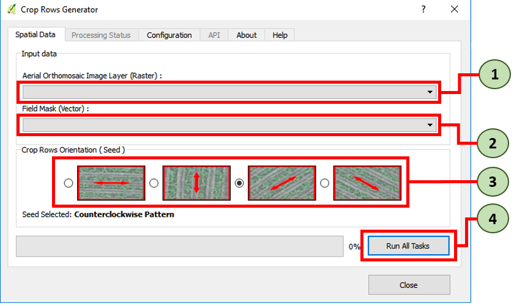
- 1. Select the Raster Image File previously loaded on QGIS TOC.
- 2. Select Vector Mask File previously loaded on QGIS TOC.
- 3. Select Seed value according to crop rows orientation.
| Horizontal pattern |
Vertical pattern |
| 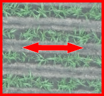 |
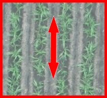 |
| Counterclockwise pattern |
Clockwise pattern |
| 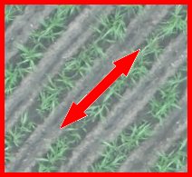 |
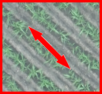 |
- 4. Click on Run All Task button to perform the process.
|
2 |
Confirm Dialog (Mosaic Clip by Mask)
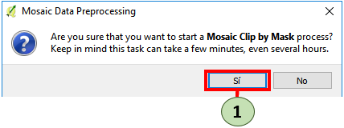
-
1. Once you Click on Run All Task button in the popup dialog you must be click on (yes/si) button.
Note: Mosaic clipping process can take a few minutes, even several hours dependes of the size of the Raster Mosaic and the complex shape of the vector mask file.
|
3 |
Confirm Dialog (Processing Task)
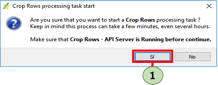
- 1. Click on (yes/si) button to perform the task.
Note: Crop Rows processing task can take a few minutes, even several hours dependes of the size of the Raster
Mosaic and crop rows to detect. Also processing time may be affected by processing server where CROP ROWS-CLI is running.
|
4 |
Processing Status (TAB)
This tab will show the process of Crop Rows generation.
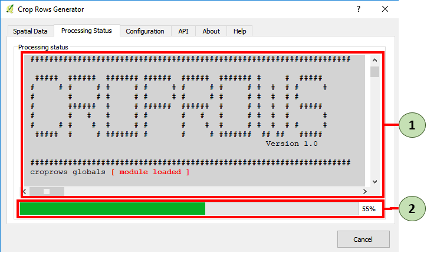
-
1. CROP ROWS-CLI standard output.
-
2. Status bar for Crop Rows generation process.
Note: Few minutes, even hours. This process can be take to complete.
|
5 |
Process finissed (Message Dialog)
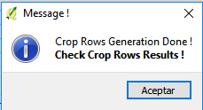
Note: Once the process is complete, the resulting data will be loaded into the QGIS TOC.
|
6 |
Crop Rows Result
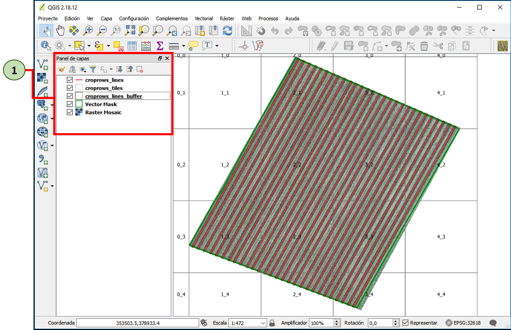
-
1. A new vector file named croprows_lines is loaded on QGIS TOC.
-
2. A new vector file named croprows_lines_buffer is loaded on QGIS TOC.
-
3. A new vector file named croprows_tiles is loaded on QGIS TOC.
Vector File (croprows_lines) (Spatial data)
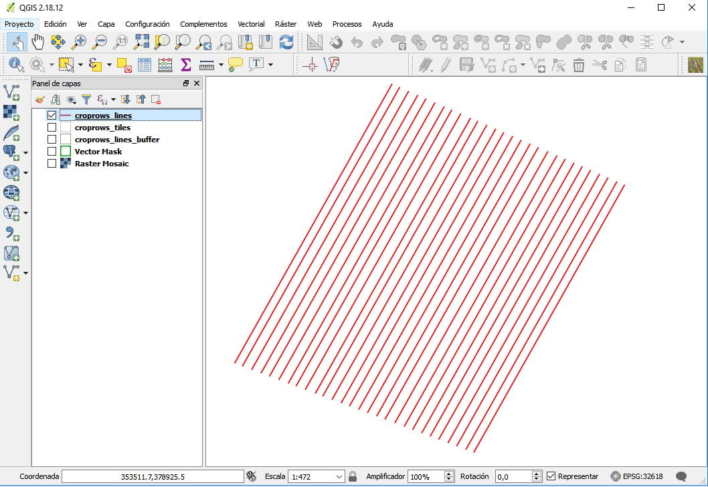
-
1. Generated croprows_lines has the same reference system as the input data.
-
2. Each of the detected lines (Crop Rows) is an independent entity.
Vector File (croprows_lines) (Alphanumeric data)
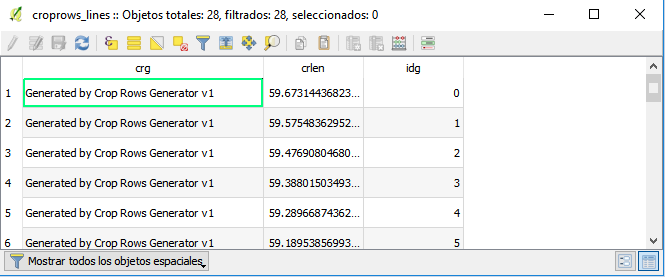
-
1. Generated croprows_lines has related alphanumeric data.
-
2. Each one of the tuples is a detected lines (Crop Rows).
idg: unique line identifier.
crlen: length of detected line (meters).
Vector File (croprows_lines_buffer) (Spatial data)
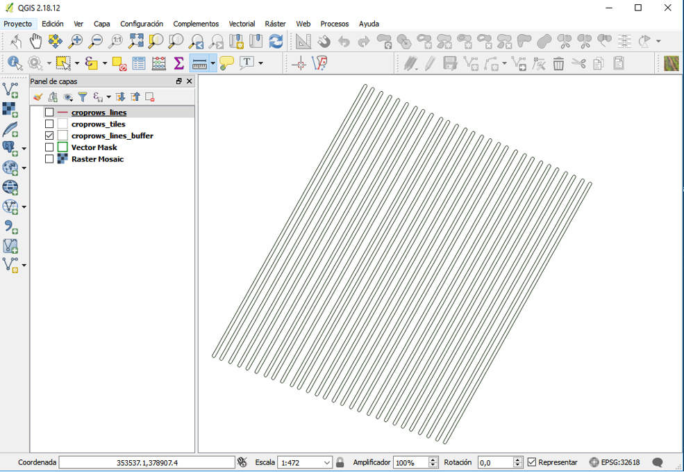
-
1. Generated croprows_lines_buffer has the same reference system as the input data.
-
2. Each of the polygon is an independent entity.
-
3. Corresponds to an influence area of 0.60 cm for each detected crop row.
Vector File (croprows_tiles) (Spatial data)
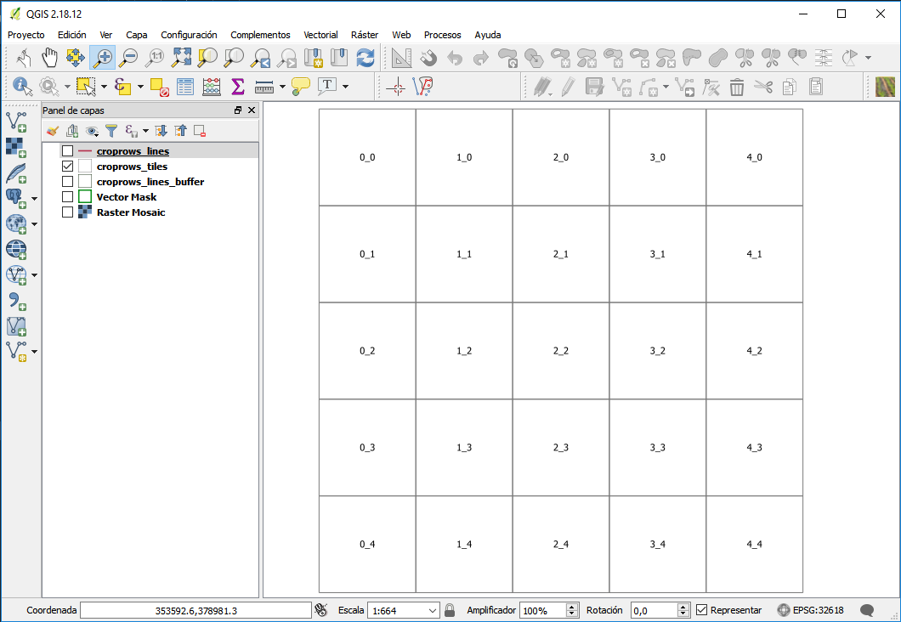
-
1. Generated croprows_tiles has the same reference system as the input data.
-
2. Each one of the tile is an independent entity.
-
3. Each vector tile corresponds usually a processed tile of 20 m x 20 m.
Results in Export Folder
1. A generated croprows_wgs84.kml file with a assigned geographic reference system (WGS84/EPSG:4326) is located. File supported by Google Earth software.
2. A generated croprows_wgs84.shp file with a assigned geographic reference system (WGS84/EPSG:4326) is located. File supported by most of the auto-guidance computer panels.
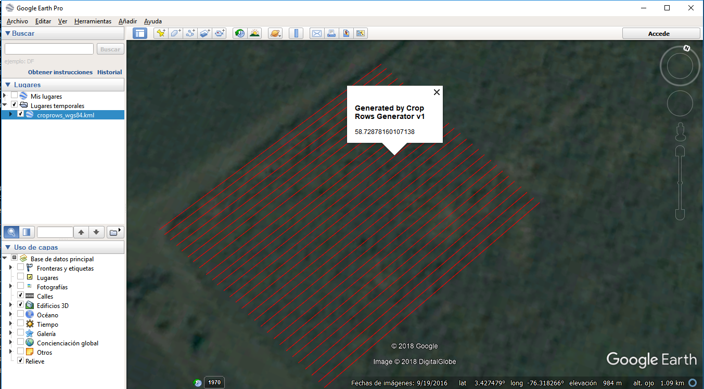
|